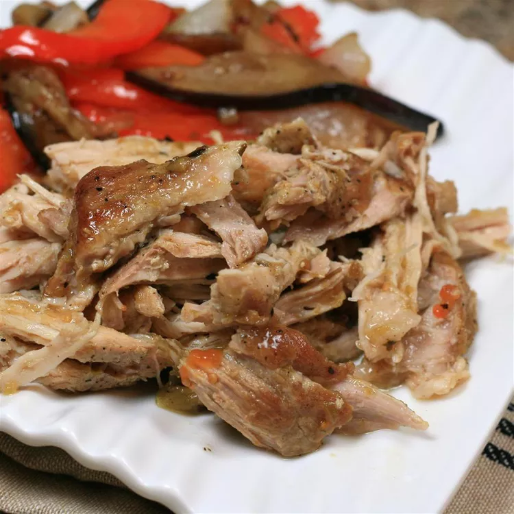

Salsa Verde Pork Recipe

Ingredients
- 1 tablespoon canola oil
- 1 (3 pounds) bonelss pork loin roast
- 11 ounces green salsa
Directions
- Heat oil in large Dutch oven over medium-heat. Brown pork loin in hot oil, 2 to 3 minutes per side
- Transfer roast to the crock of a slow cooker. Pour green salsa over the pork
- Cook on low for 5 hours
- Shred the pork into strands with two forks; stir with the sauce so the texture
is somewhat even. Continue cooking on low for 1 to 3 hours more.